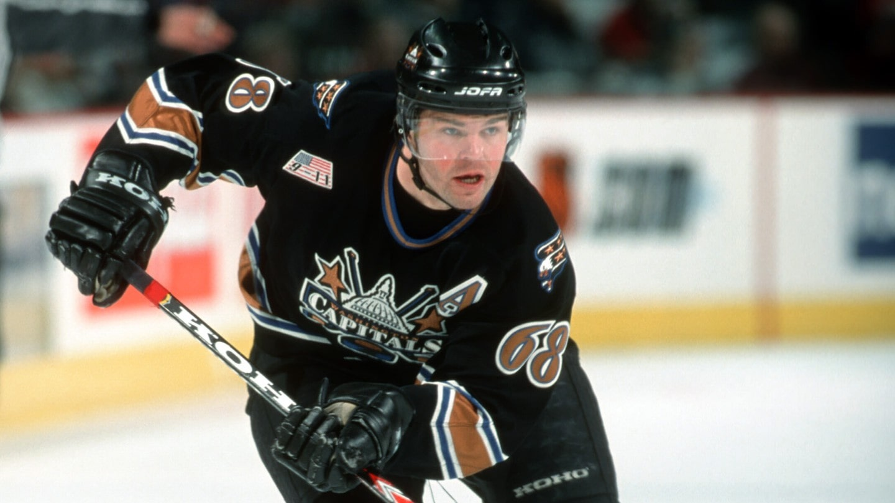

Do Washingtonu byl vyměněn 11. července 2001 s Františkem Kučerou za Krise Beeche, Michala Sivka a Rosse Lupaschuka. Velká očekávání, která do něj Washington vkládal, však Jágr nenaplnil, a v lednu 2004 byl nakonec vyměněn do klubu New York Rangers.
